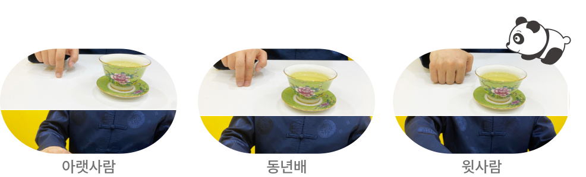

중국인들은 손가락을 구부려 탁자를 두드리는 것으로 차를 따라 준 상대에게
감사 인사를 하기도 합니다. 상대방의 연령에 따라 손동작이 다릅니다.

보충
차를 즐겨 마시는 중국 사람들은 차를 따라 주는 상대방에게 감사의
표시로 손가락으로 테이블을 가볍게 두드리기도 한다.
상대방의 연령에 따라 손의 모양을 다르게 표현하기도 하지만
일반적으로 검지와 중지를 굽히는 모양으로 인사한다.
손가락의 굽은 모양이 엎드려 절하며 감사를 표시하는 모양과 비슷하기
때문이다. 이렇게 예의를 차리는 손동작을
叩指礼(kòuzhîlî)라고 한다.